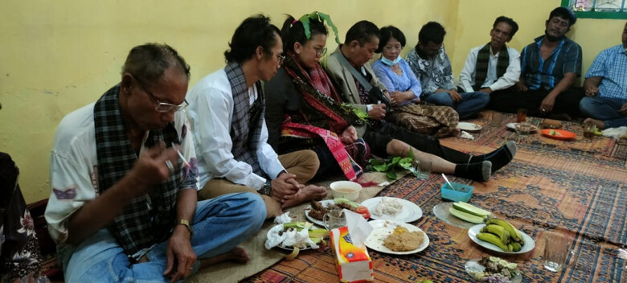
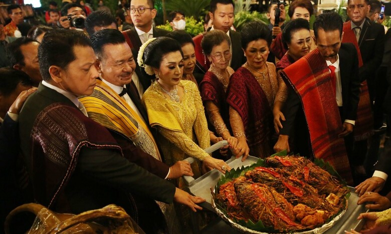

Ikan mas arsik atau dalam bahasa Batak-nya Dekke Na Niarsik merupakan makanan khas Batak Toba yang berarti ikan yang dimasak kering. Ikan arsik ini merupakan simbol karunia kehidupan dalam masyarakat Batak. Ikan arsik tersaji pada beberapa upacara daur hidup masyarakat Batak, seperti pada saat pernikahan dan kelahiran. Dekke Na Niarsik ini diberikan dengan harapan supaya orang yang menerima ikan ini dapat bersih baik hati maupun perilakunya. Ukuran ikan yang digunakan biasanya beragam, bergantung pada masing-masing orang.
Dekke Na Niarsik atau ikan mas arsik adalah wujud nyata pesan adat Batak yang harus disampaikan. Sebab, bagi orang Batak mulai dari kelahiran, menikah hingga meninggal masing-masing memiliki prosesi yang wajib hukumnya untuk dilaksanakan. Bagi pasangan yang baru menikah, jumlah ikan yang diberikan orang tua si gadis hanya satu ekor ikan mas yang mana ini melambangkan harapan bahwa kedua orang yang mengikat diri dalam jalinan pernikahan tersebut telah menjadi satu.
Ikan mas yang diberikan ini sekaligus melambangkan berkat-berkat dari orangtua yang melepas si gadis karena ia telah menjadi bagian dari keluarga suaminya. Ikan mas yang diberikan adalah ikan betina yang bertelur. Hal ini diwajibkan bagi pasangan suami-istri yang baru menikah sebagai pertanda bahwa orang tua si perempuan berharap agar borunya (anak perempuan) dapat memiliki keturunan.
Dalam bahasa Batak disebut Dekke Si Mundur, keluarga yang menerima ikan ini diharapkan dapat berjalan sejajar atau beriringan menuju arah dan tujuan yang sama. Sehingga bila ada permasalahan dan rintangan yang menghalangi dapat diselesaikan secara bersama oleh setiap anggota keluarga. Jika anak lahir, terutama jika yang lahir adalah anak pertama. Sesuai hukum adat Batak, pihak hula-hula (kelompok marga dari si ibu) harus menyediakan pasu-pasu (pemberkatan) yang dimanifestasikan dalam bentuk Dekke Na Niarsik.
Tiga ekor ikan mas yang diberikan melambangkan bahwa telah bertambah satu orang anggota dalam keluarga tersebut. Satu untuk si bapak, satu bagi ibunya, dan satu lagi untuk anak yang baru lahir tersebut. Sedangkan, lima ekor ikan arsik bagi orang tua yang sudah mempunyai cucu. Tujuh ekor diperuntukkan bagi pemimpin bangsa Batak saja. Penyajian ikan ini pada dasarnya tidak boleh sembarangan dikarenakan banyaknya makna yang terkandung di dalamnya.

